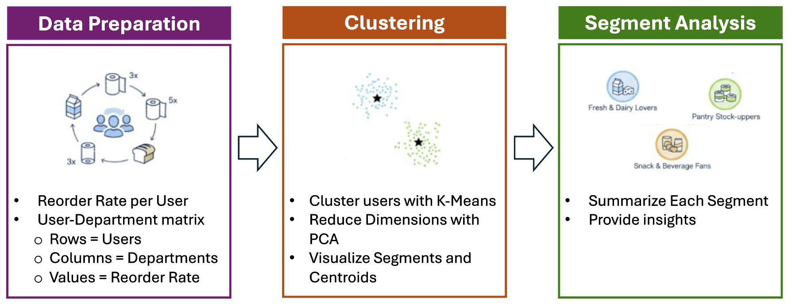
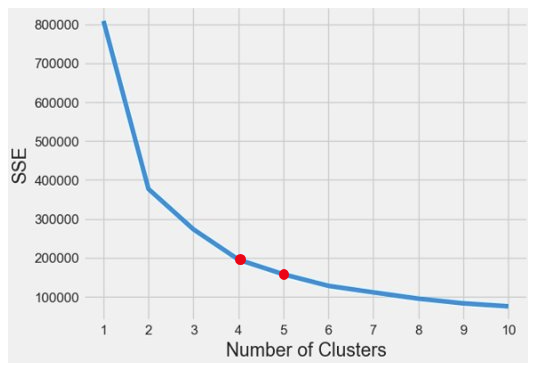
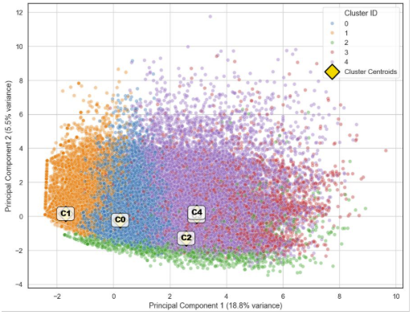

Overview
The process starts with preparing a user–department matrix based on each customer’s reorder behavior. This matrix captures how often users repurchase items across different departments, providing a behavioral profile for each customer. Next, K-Means clustering is applied to group users with similar purchasing patterns. Dimensionality reduction with PCA helps visualize these clusters and their centroids, making the segment structure easier to interpret. Finally, each segment is analyzed to identify shared characteristics and uncover meaningful shopper types—such as Fresh & Dairy Lovers, Pantry Stock-Uppers, or Snack & Beverage Fans. These insights help inform targeted marketing, personalized recommendations, and strategic decision-making.
Elbow Method
K-means: The customer segmentation process began with a data preparation stage, which involved calculating the reorder rate for each user and constructing a user–department matrix in which the rows represent users, the columns represent departments, and the values correspond to each user’s reorder rate. This matrix was then used as input for the clustering stage, where the K-Means algorithm was applied to group users into distinct clusters. Based on the elbow method a value of K = 5 was selected.
Principal Component Analysis (PCA)
Principal Component Analysis (PCA) was used to reduce dimensionality. The result is visualized as segments and their centroids, as seen in the scatter plot. The segment analysis stage takes these clusters to summarize each segment and provide insights, yielding distinct customer profiles such as ”Core Grocery Essentials,” ”Bulk/Stock-up shoppers,” and ”Family-oriented”. This methodology leverages reorder behavior and machine learning to move from raw user data to actionable, distinct customer segments.
Customer Segmentation Based on Reorder Rate
The customer segmentation process, driven by reorder patterns, identified five distinct customer segments, each presenting unique traits and opportunities for targeted marketing.
- Segment 1: the Core Grocery Essentials, one of the largest group with about 56K customers; ideal to target them with strategies like category cross-selling so they can expand the items purchase footprint.
- Segment 2: characterized as Infrequent Buyers with low reorder behavior, is the largest group with 67K users, offering the primary opportunity for retention and activation campaigns.
- Segment 3: the Bulk/Stock-up Shoppers; this group exhibits a high reorder behavior despite being the smallest segment at 1.8K users, making them ideal for loyalty and subscription offers.
- Segment 4: the Family-oriented customers with about 6.7K users; they exibit high reorder behavior on deparments like Babies, Dairy Eggs, and Produce; this segment is ideal to be targeted with family bundles specials.
- Segment 5: the Premium loyalists with about 26K users in this group, demonstrates High and broad reorder behavior and is suited for VIP rewards and early access.